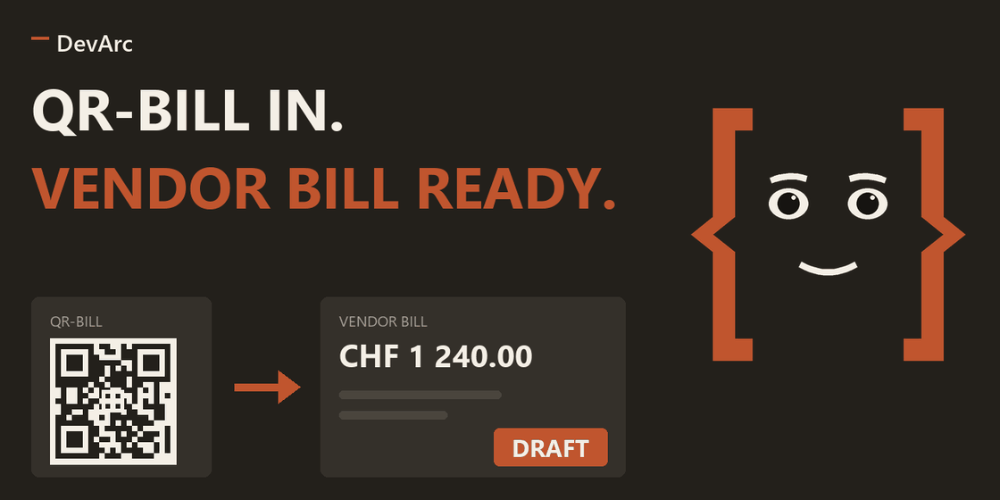
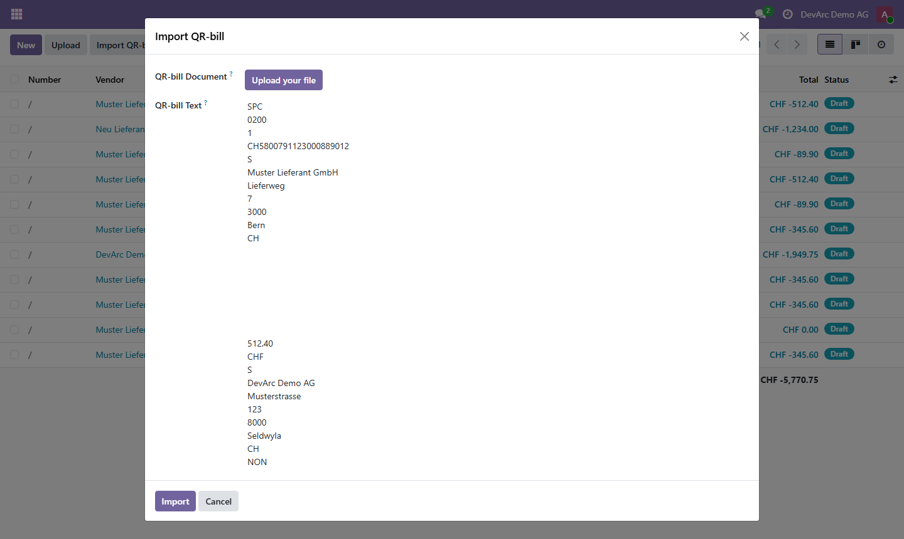
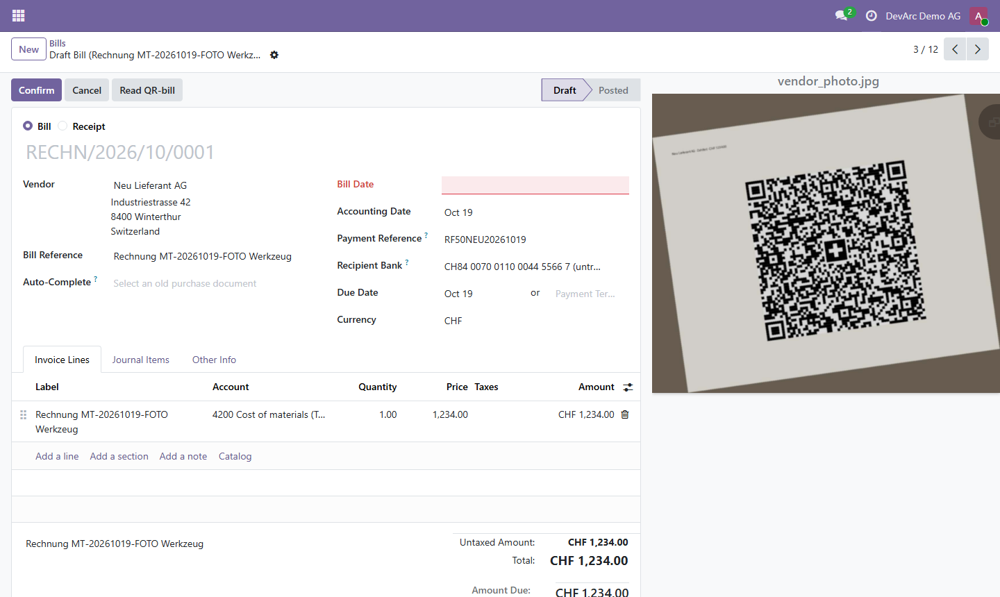
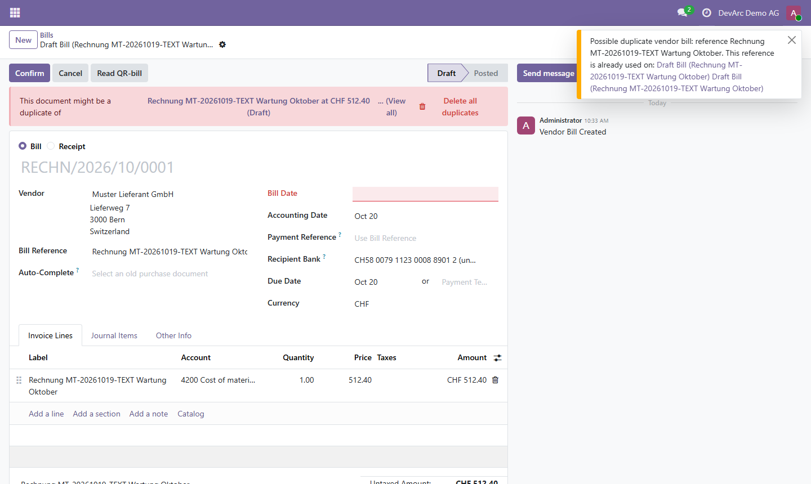

<section class="oe_container">
    <div class="oe_row oe_spaced">
        <h2 class="oe_slogan">DevArc QR Invoice</h2>
        <h3 class="oe_slogan">Import vendor Swiss QR-bills from scanner text, PDF or photo</h3>
        <p class="oe_mt32">Swiss QR-bill (SIX Swiss Payment Standards) tools for Odoo 18 Community on top of the standard Swiss localization l10n_ch. For Swiss companies that receive QR-bills from vendors and send QR-bills to customers. The main feature is the import of vendor QR-bills; on top of that, the module adds checks and a clearer message to the QR-bill that l10n_ch prints on customer invoices.</p>
        <div class="oe_span12">
            
        </div>
        <h3 class="oe_mt32">Import of vendor QR-bills</h3>
        <ul>
            <li>Button Import QR-bill on the vendor bill list, menu Accounting &gt; Vendors &gt; Import QR-bill, or the button Read QR-bill on a draft vendor bill.</li>
            <li>Input is the text of a QR code scanner, or a PDF or photo of the QR-bill. Only the QR code is decoded, there is no OCR. A PDF is searched on all pages, a document with more than one different QR-bill is rejected.</li>
            <li>The vendor is found by IBAN, otherwise by name and ZIP, otherwise created. The bank account, currency, payment reference (QRR or SCOR) and one invoice line with the amount are filled and the document is attached. The bill stays in draft.</li>
            <li>The bill reference and bill date come from the invoice number and document date of SWICO S1 billing information, when present. The unstructured message and billing information go to the notes.</li>
            <li>Odoo fills its default expense account on the line and the tax stays empty, so you choose the account and VAT before posting.</li>
            <li>A QR-bill payable to your own company is rejected.</li>
        </ul>
        <div class="oe_span12">
            
        </div>
        <div class="oe_span12">
            
        </div>
        <h3 class="oe_mt32">Duplicate warning</h3>
        <p>Odoo 18 already shows its own duplicate banner on the bill. In addition, the import shows a warning with links when another vendor bill of the same vendor has the same payment reference with the same total, or the same invoice number. Some vendors reuse one QR reference on every invoice, so the reference alone is not enough. The new bill is created anyway.</p>
        <div class="oe_span12">
            
        </div>
        <h3 class="oe_mt32">QR-bill on customer invoices</h3>
        <p>The QR-bill itself is generated by the standard Swiss localization l10n_ch. This module changes the following:</p>
        <ul>
            <li>With a QR-reference or Creditor Reference, the Unstructured Message of the QR code carries the invoice reference or number instead of a duplicate of the payment reference.</li>
            <li>Two extra checks: CH or LI IBAN and amount between 0.01 and 999,999,999.99. A failing invoice is printed without the QR-bill page.</li>
            <li>Warning on the customer invoice form that explains why the QR-bill cannot be generated.</li>
        </ul>
        <h3 class="oe_mt32">Requirements</h3>
        <p>Odoo 18 Community with l10n_ch. Python packages: <code>pip install zxing-cpp pypdfium2</code>. License LGPL-3.</p>
        <h3 class="oe_mt32">Video</h3>
        <div class="row">
            <div class="col-md-6 mb-4">
                <a href="https://youtu.be/f1qQrzFjM_E" target="_blank" rel="noopener">
                    
                </a>
                <p class="mt-2"><strong>DevArc QR Invoice</strong><br/>Walkthrough of the QR-bill import and the customer QR-bill checks. <a href="https://youtu.be/f1qQrzFjM_E" target="_blank" rel="noopener">Watch on YouTube</a></p>
            </div>
            <div class="col-md-6 mb-4">
                <a href="https://youtu.be/EXF_1ktpaHc" target="_blank" rel="noopener">
                    
                </a>
                <p class="mt-2"><strong>Related add-on: DevArc QR Reconcile</strong><br/>Matches incoming QRR and SCOR payments from camt files to customer invoices. <a href="https://youtu.be/EXF_1ktpaHc" target="_blank" rel="noopener">Watch on YouTube</a></p>
            </div>
        </div>
        <h3 class="oe_mt32">Read more</h3>
        <p>Blog article: Swiss QR-bills in Odoo Community, from import to reconciliation.</p>
        <ul>
            <li><a href="https://devarc.ch/blog/knowledge-3/swiss-qr-bills-odoo-community-import-reconciliation-11" target="_blank" rel="noopener">English</a></li>
            <li><a href="https://devarc.ch/de/blog/wissen-3/qr-rechnung-odoo-community-import-abgleich-11" target="_blank" rel="noopener">Deutsch</a></li>
            <li><a href="https://devarc.ch/sk/blog/vedomosti-3/qr-faktury-odoo-community-import-parovanie-platieb-11" target="_blank" rel="noopener">Slovensky</a></li>
        </ul>
        <h3 class="oe_mt32">Source and support</h3>
        <ul>
            <li>Source code: <a href="https://github.com/devarc-gmbh/devarc-odoo-addons/tree/18.0/devarc_qr_invoice" target="_blank" rel="noopener">https://github.com/devarc-gmbh/devarc-odoo-addons/tree/18.0/devarc_qr_invoice</a></li>
            <li>Website: <a href="https://devarc.ch" target="_blank" rel="noopener">devarc.ch</a></li>
            <li>Contact: <a href="mailto:odoo@devarc.ch">odoo@devarc.ch</a></li>
        </ul>
        <p>Made by <a href="https://devarc.ch" target="_blank" rel="noopener">DevArc GmbH</a>, Switzerland.</p>
    </div>
</section>
